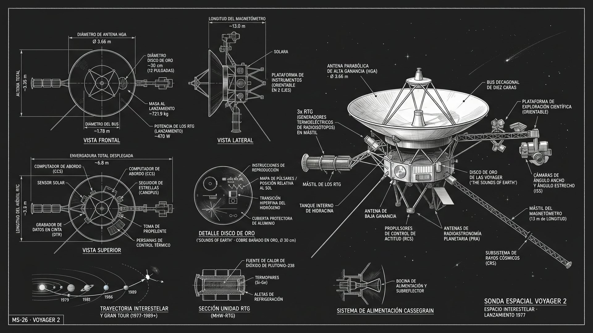

Voyager 2

La única nave que ha pasado cerca de Júpiter, Saturno, Urano y Neptuno. Salió del sistema solar en 2018 y sigue enviando datos desde el espacio interestelar.
Misión interestelar en curso: cruzó la heliopausa el 5 de noviembre de 2018 y se aleja del Sol a unas 3,1 UA al año, 48 grados al sur de la eclíptica. Los ingenieros esperan mantener el contacto hasta 2036.. Personas: Edward Stone, Linda Spilker, Suzanne Dodd, John Richardson
Lo que hizo
- El gran tour — Aproveché una alineación de los planetas que ocurre una vez cada 176 años para visitar cuatro gigantes con una sola nave y una sola reserva de combustible.
- Los anillos y el punto oscuro — En Neptuno descubrí cuatro anillos nuevos y el Gran Punto Oscuro, y medí vientos de 1.100 kilómetros por hora. En Tritón encontré el cuerpo más frío que se conoce.
- Salir de casa — El 5 de noviembre de 2018 crucé la heliopausa. Soy, con mi gemela Voyager 1, una de las dos únicas naves que han llegado al espacio entre las estrellas.
Modelo 3D, chat y cómic, en tres idiomas
Fuentes
- science.nasa.gov/mission/voyager/voyager-2
- www.jpl.nasa.gov/news/nasas-voyager-2-probe-enters-interstellar-space/
- science.nasa.gov/mission/voyager/frequently-asked-questions/
Ver el índice completo · Proyecto del NASA Space Apps Challenge 2026. Contenido con fuentes citadas.